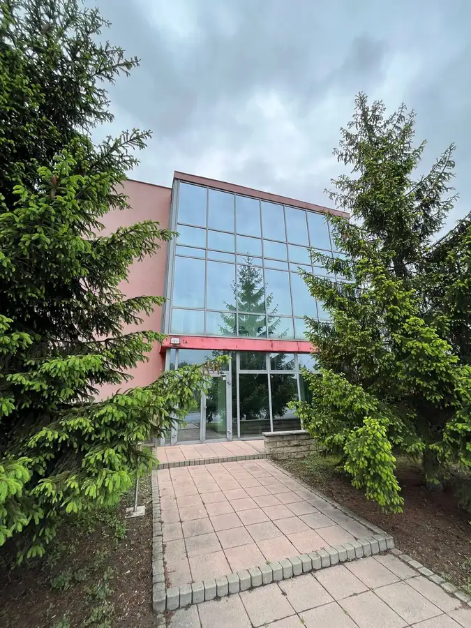
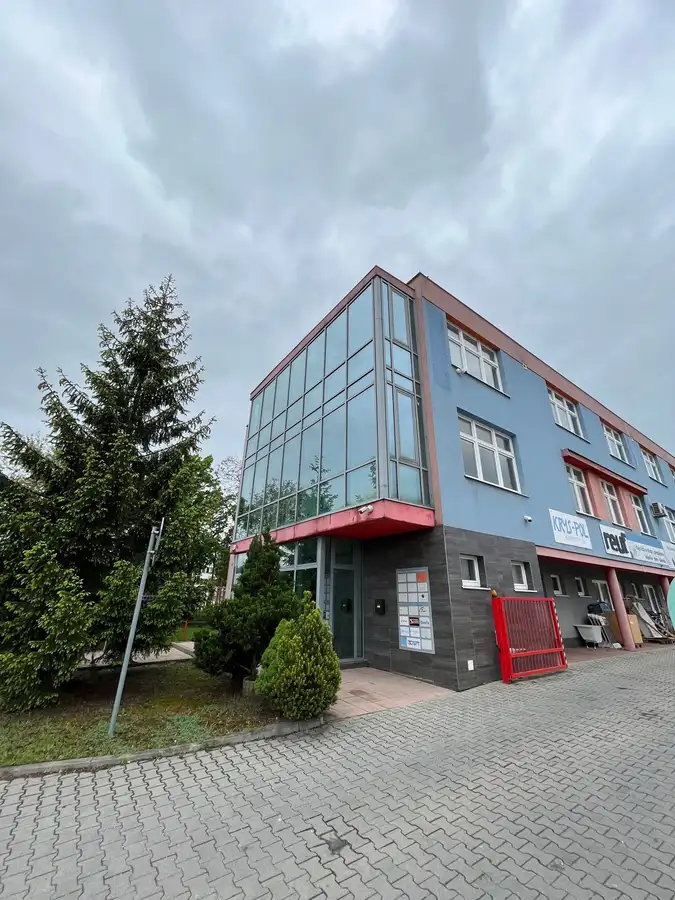
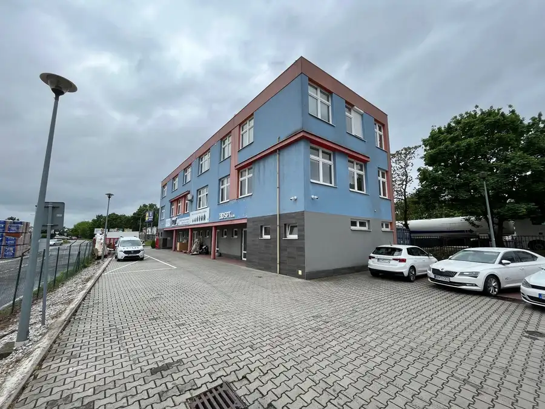
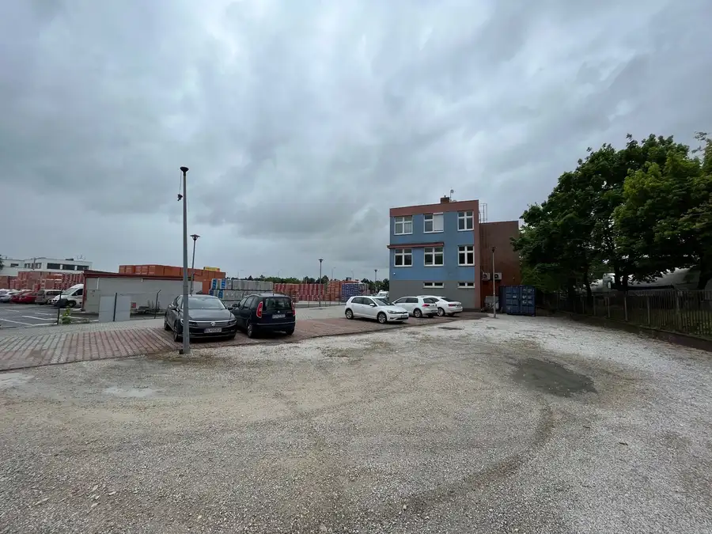
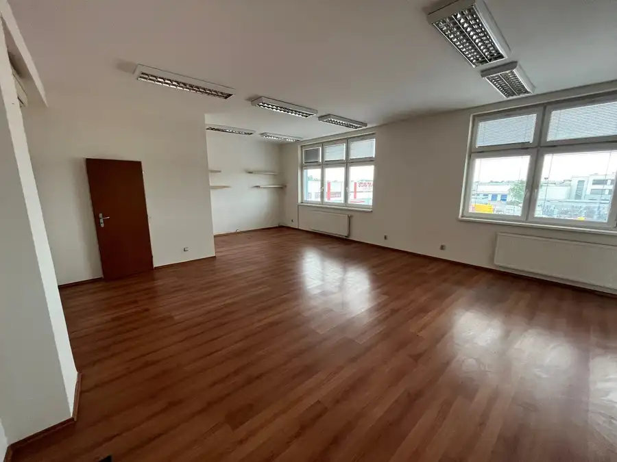
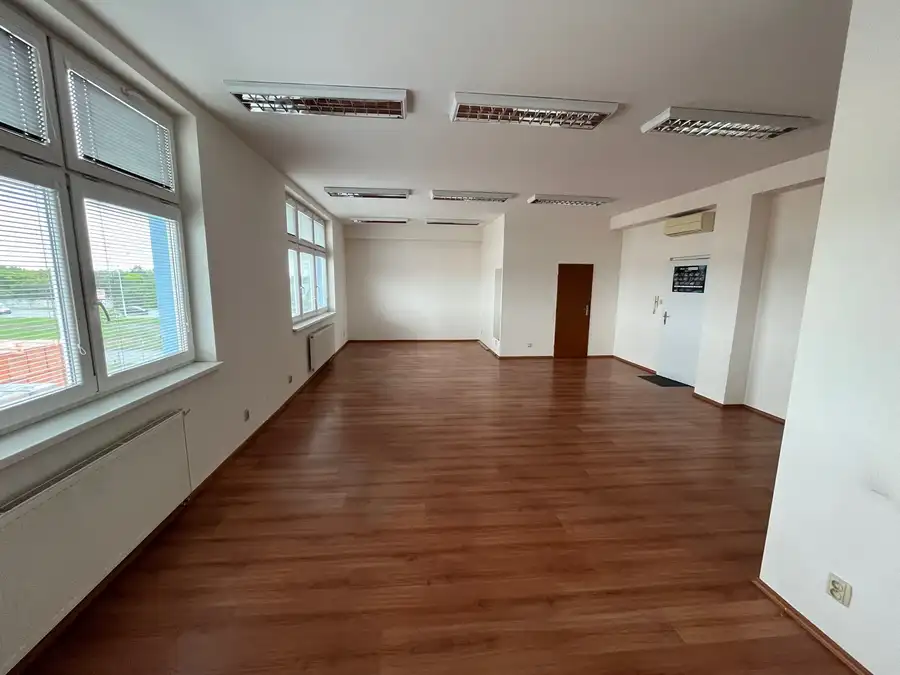
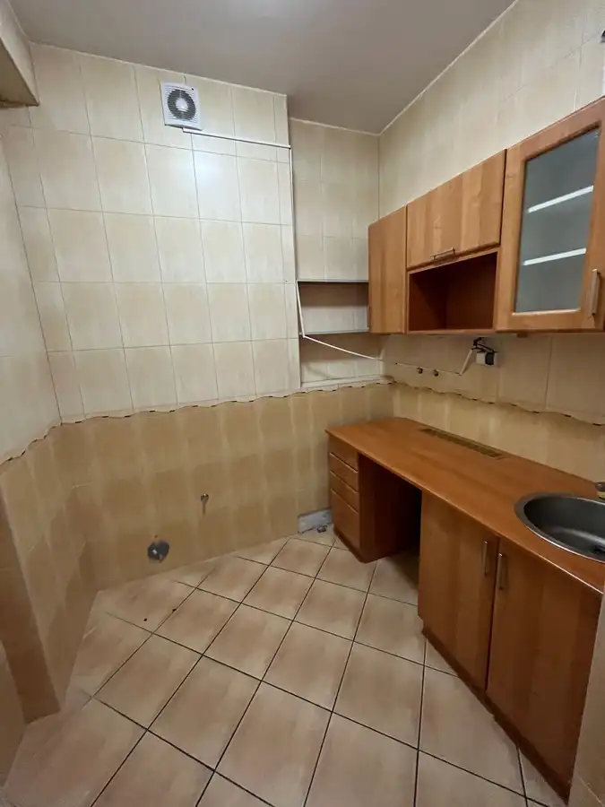
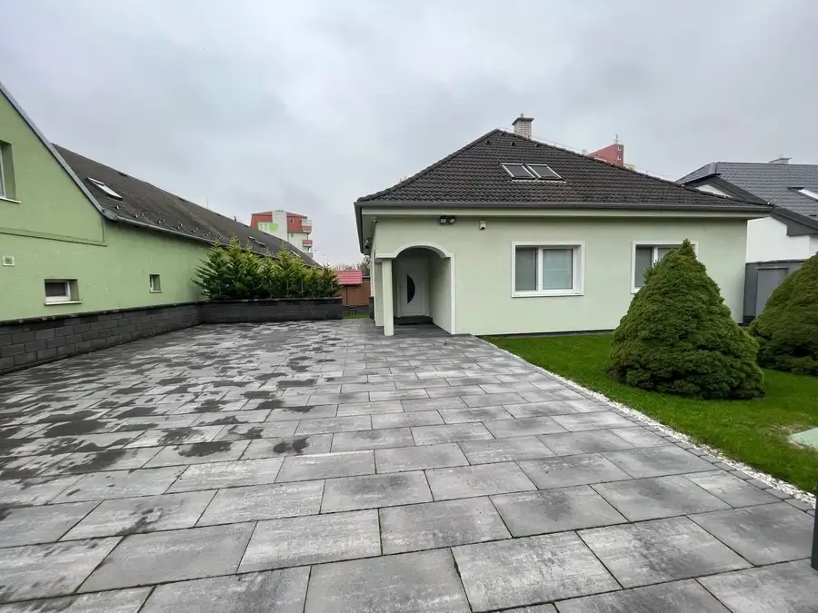
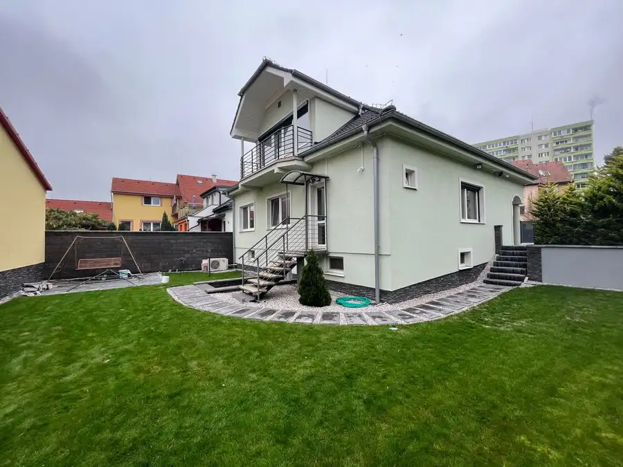
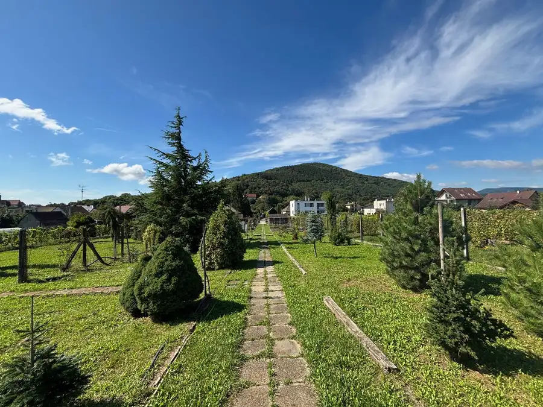

Najlacnejšie kancelárske priestory v Bratislave. Prenájom kancelárskych priestorov na začiatku Bratislavy, Tuhovská ulica, BA III- Vajnory
Vajnory, Bratislava







- Plocha18.7 m²
- StavČiastočná rekonštrukcia
- VlastníctvoFiremné
O nehnuteľnosti
Prenájom kancelárskych priestorov na začiatku Bratislavy, Tuhovská ulica, BA III- Vajnory. K dispozícii je viac kancelárii na prvom alebo druhom poschodí. Dostatok parkovacích miest v areály pozemku- parkovanie je zahrnuté v cene prenájmu.Kancelárie majú výmeru od 18,7 m2 a viac + spoločné sociálne zariadenie pre poschodie a spoločná kuchynka. Pôdorys je priložený vo fotodokumentácii.Budova bola kolaudovaná v roku 2002, vstup do budovy je cez presklený vstup, kde sa nachádza recepcia a schodisko. Na každom poschodí sa nachádza spoločná oddychová zóna/fajčiareň. Po vstupe na prvé poschodie je potrebné prejsť cez spoločnú chodbu a presklené uzamykateľné dvere do samostatnej kancelárie. i.Vybavenie:- plastové okná so žalúziami,- plávajúca podlaha,- 1x klimatizácia,- dátová prípojka.Výhody:- Priestor je možné upraviť podľa vlastných predstáv po dohode s majiteľom objektu,- kamerový systém pre celý objekt,- veľké parkovanie v areály objektu, ktoré je v cene,- možnosť zriadenia alarmu pre kanceláriu.Kancelárie sa nachádzajú v blízkosti Zlatých pieskov s rýchlym prístupom na diaľnicu D1, D4/R7.Voľné ihneď.Cena: 7,50 Eur/m2/mesiac + DPH.Cena energií: 5 Eur/m2/mesiac + DPH. Energie zahŕňajú: dodávku tepla, elektriku, upratovanie, odvoz a likvidáciu odpadu.Požadovaná prvá platba: 1x nájom vrátane energií + 2x depozit. Pri podpise sa hradí jednorázová sprostredkovateľská odmena pre RK vo výške 1/2 nájmu Kontakt: 0904 880 900 alebo hamalaivanproperty@gmail.com
Parametre
- Druh
- Kancelárie, administratívne priestory
- Dátum zverejnenia
- 10. 07. 2026
- Energetický certifikát budovy
- nie je
- Počet vonkajších parkovacích miest
- 5
- Rok výstavby
- 2002
- Stav nehnuteľnosti
- Čiastočná rekonštrukcia
- Typ
- Prenájom
- Typ konštrukcie
- Tehlová
- Vlastníctvo
- Firemné
- Vybavenie
- Vonkajšie parkovacie miesto
- Úžitková plocha
- 18.7 m²
Kde to je


Mohlo by Vás zaujímať

Komerčné priestoryNové 1 400 €Prenájom 2-poschodového a podpivničeného rodinného domu na firemné účely, ul. Podzáhradná, BA II - Podunajské Biskupice Podunajské Biskupice, Bratislava 180 m²
DomNové 1 400 €Prenájom 2-poschodového a podpivničeného rodinného domu so 6-timi parkovacími miestami, BA II - Podunajské Biskupice Podunajské Biskupice, Bratislava 180 m²
PozemokNové Cena na vyžádáníPredaj priestranného pozemku určený na výstavbu rodinných domov, obec: Horné Orešany Horné Orešany 3882 m²